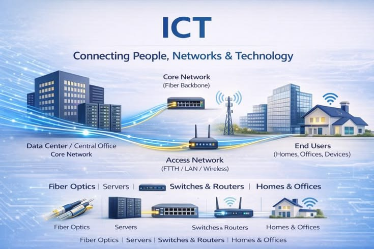

What is ICT?
ICT (Information and Communication Technology) is the use of technology like computers, mobile phones, and the internet to store, process, and share information.
In simple English, ICT is what helps us talk to friends far away, watch videos online, and do our schoolwork faster. It is everywhere around us!
6 Reasons Why ICT Matters
Click on the cards to explore each topic
1. Fast Communication
ICT helps people communicate instantly anywhere in the world. No more waiting for days to get a letter!

2. Better Education
ICT improves learning using digital tools. You can learn from teachers around the world from your bedroom.
3. Improves Business
Businesses use ICT to manage work and sell products. It helps them reach more customers and keep records safely.
4. Access to Information
ICT allows people to find information on the internet instantly. You have a whole library in your pocket!
5. Improves Healthcare
Hospitals use ICT systems to store patient records and share medical info. This helps doctors save lives faster.
6. Saves Time & Money
ICT automates many tasks and reduces paperwork. This makes work faster and saves a lot of money and trees!